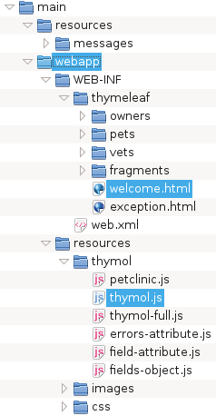

thRelativeRootPath
The thRelativeRootPath parameter controls a new mechanism for determining the location of (template) files within the structure of a Thymol project.
The default value for thRelativeRootPath is blank (""), setting it's value to non-blank is the indicator for Thymol to use the new relative root path file location mechanism.
The mechanism works like this: normally, a Thymol template must load the "thymol.js" bootstrap script and normally, this script is found in a directory common to all template files within a given Thymol project, the relative root path addressing mechanism exploits this fact to locate the other templates relative to the location of the "thymol.js" script. The actual value given to the thRelativeRootPath parameter specifies the relative path between this script and the effective root directory. Thymol can then append this value to the path to "thymol.js", then append the value of the thPath variable to find the location of other templates files.
Here is a typical example taken from here:

In the home page (welcome.html), the script tag embodying the "thymol.js" load looks like this:
<script type="text/JavaScript" src="../../resources/thymol/thymol.js" data-jquery-src="" data-thymol-load="../../resources/thymol/petclinic.js"></script>
In this example, we set:
thRelativeRootPath = "../..";We also set:
thPath = "WEB-INF/thymeleaf"; thMessagePath = "../resources/messages";resources can be found via "@{/resources/...}"
and messages in "main/resources/messages".